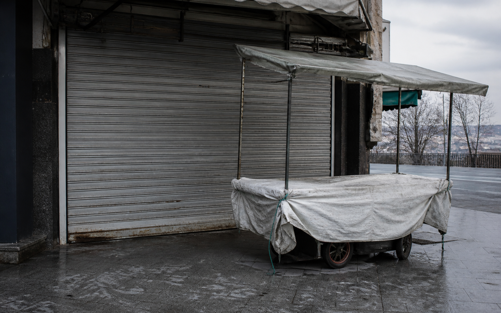

손님이 들어오는 길이 하나뿐인 가게 — 대형마트 67곳이 문을 닫는 날 확인할 것
11월 27일부터 홈플러스 대형마트 67곳과 본사가 임시 휴업합니다. 한 거래처·한 채널에 기대온 가게가 무엇을 잃는지, 손님이 들어오는 길을 여섯 개로 나눠 점검하는 표와 대행사에 맡길 때 확인할 세 가지를 정리했습니다.

11월 27일부터 홈플러스 대형마트 67곳과 본사가 문을 닫습니다. 회사는 상품 매입 자금이 부족해 인수합병이 마무리될 때까지 마트 부문 영업을 멈춘다고 알렸고, 하루 앞선 26일부터는 온라인 배송이 먼저 중단됩니다. 재개 시점은 정해지지 않았습니다.
이 사건이 남기는 질문은 하나입니다. 우리 가게에 손님이 들어오는 길이 몇 개인가. 길이 하나면 그 길이 회사 사정으로 막히는 날, 가게는 서 있습니다. 오늘은 그 길을 세어 보는 이야기입니다.
확인된 것과 확인되지 않은 것#
회사가 밝힌 내용은 이렇습니다. 대상은 현재 영업 중인 대형마트 67곳과 본사이고, 입점업체가 영업하는 몰 부문은 계속 정상 영업합니다. 26일 이후 배송 예약 주문은 자동 취소되고 결제 금액은 전액 환불됩니다. 6월에 다른 회사로 넘어간 홈플러스 익스프레스는 온라인 주문이 정상입니다.
확인되지 않은 것은 이쪽입니다. 입점 가게의 매출이 실제로 얼마나 줄었는지, 임대료와 관리비가 어떻게 조정되는지, 언제 다시 열리는지. 그래서 이 글에는 "얼마 손해"라는 숫자를 쓰지 않았습니다. 대신 무엇을 확인할지를 적었습니다.
길이 하나면 무엇이 무너지나#
입점 가게의 매출은 그 건물에 걸어 들어오는 사람 수에 묶여 있습니다. 대형마트가 닫히면 주차 동선이 바뀌고, 주말에 장을 보러 오던 가족 단위 손님이 오지 않습니다. "몰 영업은 계속된다"는 안내는 문을 열어도 된다는 뜻이지, 손님이 온다는 뜻이 아닙니다.
비용은 그대로입니다. 임대료, 관리비, 인건비, 공과금은 매출과 상관없이 나갑니다. 납품하는 가게는 더 직접적입니다. 신선식품 납품은 지난 20일부터 대부분 끊겼고, 이미 납품한 물건의 대금은 남아 있습니다.
손님이 들어오는 길, 여섯 개로 나눠 보기#
아래 표를 오늘 한 번 채워 보세요. 채우는 데 10분이면 됩니다. "있음"이 세 개 미만이면, 그중 하나가 막히는 날 가게가 설 확률이 높습니다.
| 들어오는 길 | 우리 가게 상태 | 이 길이 막히면 |
|---|---|---|
| 지도 앱(플레이스·구글) | 소개글·사진·영업시간이 최신인가 | 지나가던 손님이 우리 가게를 모릅니다 |
| 블로그·검색 글 | 최근 한 달 안에 쓴 글이 있는가 | 검색으로 찾는 손님이 다른 집으로 갑니다 |
| 카톡 채널·문자 | 답장할 사람과 답장 문장이 있는가 | 문의가 와도 다음 날 답이 나갑니다 |
| 배달 앱 | 사진과 메뉴 구성이 최신인가 | 앱 안에서 비교당하고 밀립니다 |
| 거래처·납품 | 한 곳이 매출의 30%를 넘는가 | 그 한 곳이 멈추면 매출이 통째로 멈춥니다 |
| 소개·단골 | 소개해 줄 단골이 있는가 | 새 손님 비용을 매달 다시 씁니다 |
30%는 절대 기준이 아닙니다. 업종에 따라 20%만 넘어도 위험한 가게가 있고, 납품만 하는 가게는 한 곳이 60%를 넘기도 합니다. 중요한 건 비율이 아니라 대체할 길이 있는지입니다.
이번 주에 할 세 가지#
- 매출을 길별로 나눠 적기. 지난 3개월 매출을 위 표의 여섯 칸에 나눠 봅니다. 합이 100%가 되어야 합니다.
- 계약서에서 '영업 중단' 찾기. 임대차 계약서에 건물이 문을 닫을 때 임대료를 어떻게 하는지 조항이 있는지 봅니다. 없으면 관리 주체와 협의해야 합니다. 확인할 것은 휴업 기간 감액 가능 여부, 관리비 부과 기준, 원상복구 범위입니다. 말로 합의하지 말고 문자나 메일로 남기세요.
- 납품·정산 서류 모으기. 거래명세서, 세금계산서, 입금 내역을 월별로 정리하고 지급 예정일과 담당자 답변을 기록합니다. 회생절차가 진행 중인 회사와의 채권은 처리 방식이 다르므로, 금액이 크면 전문가 확인이 필요합니다.
자금이 급한 가게라면 참고할 제도가 있습니다. 중소벤처기업부의 「일시적 경영애로자금」이 11월 25일부터 연 2.5% 고정금리로 바뀌었습니다. 한도 1억 원, 2년 거치 후 3년 상환 구조는 그대로이고, 대출 제한 요건도 15개에서 13개로 줄었습니다. 신청은 소상공인시장진흥공단 지역센터(전국 80곳) 방문 또는 온라인으로 합니다. 빚을 권하는 이야기가 아니라, 매출이 갑자기 끊긴 달에 고정비를 버티는 방법 중 하나입니다.
노티스랩이 이때 하는 일#
길을 새로 만들자고 사진을 새로 찍는 가게는 드물고, 그럴 여유도 없습니다. 그래서 노티스랩은 이미 있는 것을 다른 길에 올리는 일부터 합니다. 업체가 제공한 기존 사진과 영상만으로 작업하고, 별도 현장 촬영은 기본 서비스가 아닙니다.
- 지난 2년치 매장 사진과 리뷰 속 사진 중 스무 장을 골라 지도 앱 소개글과 사진 순서를 다시 잡습니다
- 오늘 파는 것을 알리는 글 한 편 (메뉴·영업시간·주차 안내를 기존 사진으로)
- 카톡 채널 프로필과 자주 쓰는 답변을 채워, 답장이 늦어도 손님이 다음 행동을 알게 합니다
세 가지 모두 새로 만드는 일이 아니라, 있는 것을 다른 길에 세우는 일입니다. 한 길이 막히는 사고는 예고 없이 오지만, 그때 3주 안에 움직이려면 평소에 다른 길에 우리 가게가 서 있어야 합니다.
대행사에 맡긴다면 계정부터 확인하세요#
길을 여러 개 만들 때 대행사에 맡기는 경우가 많습니다. 이때 확인할 것은 세 가지입니다.
첫째, 계정의 주인. 지도 앱 사업자 계정, 블로그, 카톡 채널의 관리자 권한이 누구에게 있는지 정합니다. 인증 번호를 받는 번호가 대행사 것이면, 계약이 끝난 뒤 대화 기록과 리뷰를 직접 열지 못할 수 있습니다.
둘째, 콘텐츠 원본. 사진 원본과 글 원본을 우리가 받아 두는 조항을 넣습니다. 다른 길로 옮길 때 다시 만들지 않아도 됩니다.
셋째, 그만둘 때의 인수인계. 어떤 글과 사진이 어디에 올라가 있는지 목록으로 받습니다. 이 목록이 없으면 가게를 넘기거나 채널을 바꿀 때 무엇이 우리 것인지 확인하기 어렵습니다. 관련 내용은 가게를 넘길 때 지도와 리뷰는 누구의 것인가에 정리해 두었습니다.
주의할 점#
이 사건은 회사와 대형마트의 문제이고, 입점 가게의 사정은 계약마다 다릅니다. 같은 건물에서도 임대 조건과 관리 주체가 다르니 일반론으로 판단하지 마세요. 회생절차와 관련된 채권은 개별 상담이 필요하고, 이 글은 법률·세무 자문이 아닙니다.
반대로 이 사건이 기회가 되는 가게도 있습니다. 대형마트에서 사던 신선식품을 동네에서 사는 손님이 실제로 생깁니다. 다만 그 손님이 우리 문 앞까지 오려면 지도 앱에서 '영업 중'으로 보이고, 오늘 무엇을 파는지가 첫 화면에 있어야 합니다. 관련해서는 26일 대형마트 온라인 배송 중단 글에 동네 수요 이야기를 따로 적었습니다.
오늘 할 일#
표 채우기, 계약서에서 영업 중단 조항 찾기, 지도 앱 영업시간이 최신인지 보기. 세 번째는 5분이면 끝나고, 이번 주에 가장 자주 틀리는 부분입니다.
우리 가게에 손님이 들어오는 길이 몇 개인지, 어느 길이 비어 있는지 궁금하시면 가게 이름과 지금 쓰는 채널만 카카오톡 채널 (새 탭에서 열림)로 보내 주세요. 보유 사진으로 무엇을 어디에 올릴 수 있는지부터 정리해 드리겠습니다.
확인한 자료#
- 홈플러스 마트 부문 영업 일시 중단(2026년 11월 25일 사내 공지) — 연합뉴스 https://www.yna.co.kr/view/AKR20261125134751030 (새 탭에서 열림) · 아주경제 https://www.ajunews.com/view/20261125172505202 (새 탭에서 열림) · 한국경제 https://www.hankyung.com/article/202611259868g (새 탭에서 열림)
- 홈플러스 고객 공지, 온라인 배송 중단(2026년 11월 23일) — https://mfront.homeplus.co.kr/cs/noticeView?noticeNo=701 (새 탭에서 열림)
- 중소벤처기업부 「일시적 경영애로자금」 금리 인하·요건 완화(2026년 11월 25일 시행), 소상공인시장진흥공단 안내
자주 묻는 질문#
대형마트가 닫히면 몰 안 입점 가게도 문을 닫아야 하나요?#
아닙니다. 회사는 입점업체의 몰 부문 영업은 계속된다고 밝혔습니다. 다만 대형마트를 보러 오던 방문객이 사라지므로, 문을 열어 두는 것과 손님이 오는 것은 별개로 봐야 합니다.
납품 대금을 못 받으면 무엇부터 하나요?#
거래명세서, 세금계산서, 입금 내역을 월별로 모으고 지급 예정일과 담당자 답변을 기록해 두세요. 회생절차가 진행 중인 회사와의 채권은 일반 거래처와 처리 방식이 다르므로, 금액이 크면 변호사나 전문가 확인이 필요합니다.
채널을 여러 개로 늘리면 관리가 안 되지 않나요?#
길을 늘리는 목적은 관리가 아니라 대체 수단입니다. 당장은 지도 앱과 검색 글 두 개만 최신으로 유지해도 충분합니다. 관리할 수 있는 개수를 정하고, 대행사에 맡길 때는 계정 소유와 인수인계 목록을 계약에 넣으세요.
KEEP READING
이어서 읽기
같은 흐름에서 이어지는 글입니다. 지금 매장에 해당하는 지점부터 읽으시면 됩니다.

가게를 넘길 때 지도와 리뷰는 누구의 것이 됩니까 — 서류에 없는 다섯 가지
폐업 결심에서 사업자등록 말소까지 중간값 12개월. 그사이 지도·리뷰·예약 이력은 주인 없이 흩어집니다. 양도·폐업 전에 확인할 다섯 가지.

26일부터 대형마트 온라인 배송이 멈춥니다 — 이번 주 동네 가게가 놓치는 손님
홈플러스가 상품 수급 차질로 2026년 11월 26일부터 온라인 배송을 중단합니다. 신선식품 납품률은 10% 아래로 떨어졌고, 예약 주문은 자동 취소·전액 환불됩니다. 손님의 장보기 동선이 바뀌는 이번 주, 동네 가게가 확인해야 할 세 가지를 정리했습니다.